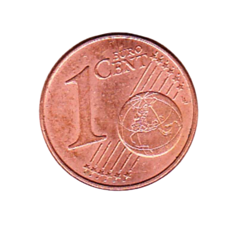
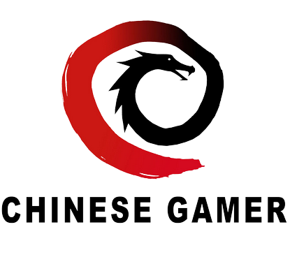

League of Legends
League of Legends (LoL) est un jeu de combat en équipe dans lequel deux équipes de cinq joueurs s'affrontent pour détruire la base ennemie. 2tapmachine excelle en tant qu'ADC (Attack Damage Carry), un rôle qui se concentre sur les dégâts à distance. Avec son classement Diamant 1, il est un joueur redoutable dans ce domaine.
World of Warcraft
World of Warcraft (WoW) est un jeu de rôle en ligne massivement multijoueur (MMORPG) où les joueurs explorent un vaste monde fantastique. 2tapmachine joue un paladin et se spécialise dans le tanking, protégeant son équipe en attirant l'attention des ennemis. De plus, il excelle également en tant que soigneur, guérissant ses alliés avec compétence. Sa polyvalence fait de lui un atout précieux pour toute équipe de raid.
Valorant
Valorant est un jeu de tir à la première personne tactique où deux équipes de cinq joueurs s'affrontent pour atteindre leurs objectifs. Dans ce jeu, 2tapmachine est classé Diamant 2 et est particulièrement réputé pour ses incroyables headshots, éliminant rapidement ses adversaires. Son précieux sens de l'observation et sa précision en font un tireur redoutable dans le jeu.
